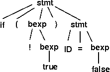
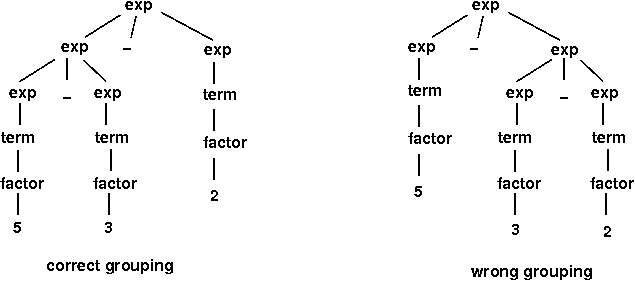
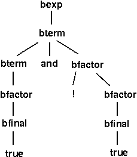

Answers to Self-Study Questions
Test Yourself #1
The new production is: stmt → WHILE LPAREN bexp RPAREN stmt
Test Yourself #2
Question 1:
stmt => if ( bexp ) stmt => if ( ! bexp ) stmt => if ( ! true ) stmt =>
if ( ! true ) ID = bexp ; => if ( ! true ) ID = false ;
This derivation is a leftmost derivation.
Question 2:

Test Yourself #3

Test Yourself #4
Question 1:
This grammar enforces precedences, but not associativities:
bexp → bexp OR bexp | bterm
bterm → bterm AND bterm | bfactor
bfactor → NOT bfactor | bfinal
bfinal → LPAREN bexp RPAREN | TRUE | FALSE
This grammar enforces precedences and associativities:
bexp → bexp OR bterm | bterm
bterm → bterm AND bfactor | bfactor
bfactor → NOT bfactor | bfinal
bfinal → LPAREN bexp RPAREN | TRUE | FALSE
Question 2:
